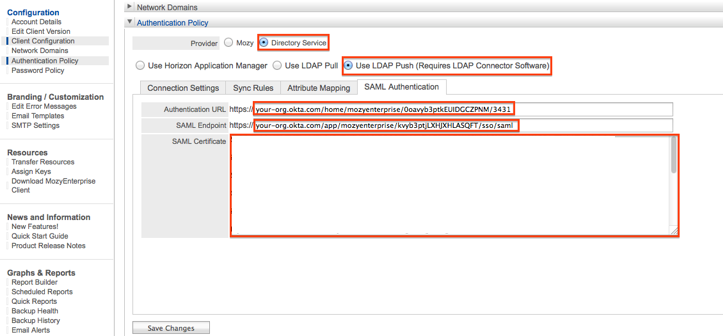

In the Provider field, check Directory Service.
Click the SAML Authentication tab.
In the Authentication URL field, enter the URL under Embed Link located on the General tab of the Mozy Application in Okta.
Copy and paste the following information into the SAML Endpoint field.
Sign in to the Okta Admin app to generate this variable.Copy and paste the following certificate into the SAML Certificate field.
Sign in to the Okta Admin app to to generate this variable.